O Espelho tecnológico
Nesta oficina de tecnologia e design, os estudantes assumem o papel de criadores ao desenvolverem um espelho interativo utilizando a extensão Face Sensing do Scratch. Por meio da programação de algoritmos, criarão um provador virtual no qual acessórios, como chapéus e óculos, acompanham automaticamente os movimentos e o tamanho do rosto em tempo real, unindo aprendizado técnico e liberdade criativa para personalizar estilos e transformar o projeto em um jogo interativo de vestir.
Toda a construção pode ser realizada 100% no Scratch, com a possibilidade de compartilhamento dos projetos finalizados na comunidade da plataforma.
Estrutura da Oficina
Preparar
15 minApresentar o contexto do espelho interativo, introduzir a extensão Face Sensing do Scratch e realizar uma mini experiência de detecção de rosto.
Criar
60 minProgramar o acessório para acompanhar o topo da cabeça, inclinar junto com o rosto e ajustar o tamanho conforme a aproximação/afastamento.
Refletir
15 minCompartilhar os projetos, testar as interações dos colegas, registrar descobertas e refletir sobre o processo de programação e design.
Preparar
15 minApresentação
Nesta oficina, os estudantes são convidados a assumir o papel de criadores em um laboratório de tecnologia e design, desenvolvendo um espelho interativo que funciona como provador virtual de acessórios. Utilizando a extensão Face Sensing do Scratch, irão programar um sistema capaz de identificar pontos do rosto capturados pela câmera e posicionar acessórios virtuais, de modo que acompanhem os movimentos da cabeça, ajustem-se ao tamanho do rosto e possam ser alterados de forma interativa.
A proposta integra programação e design, permitindo que os estudantes compreendam como dados capturados em tempo real podem ser utilizados para atualizar objetos na tela com base em coordenadas, eventos e condições lógicas. Ao longo da atividade, serão mobilizados conceitos como algoritmos, eventos, variáveis e condicionais, articulando raciocínio lógico e criatividade.
Inicialmente, os estudantes serão orientados na criação de um primeiro acessório (um chapéu que acompanha o topo da cabeça e se ajusta conforme o movimento). Em seguida, terão autonomia para desenvolver novos elementos visuais, combinar estilos e programar interações, transformando o projeto em um jogo de vestir digital personalizado. O foco está tanto na construção técnica quanto na experimentação estética, reforçando a ideia de que programação também é uma forma de expressão criativa.
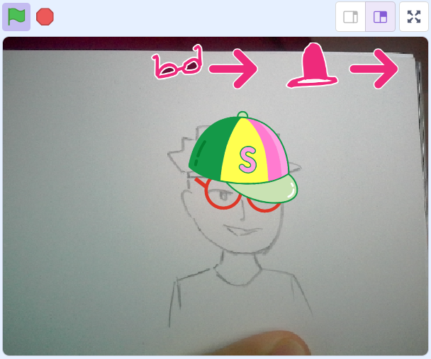
helpPerguntas reflexivas
- Como o computador consegue identificar que há um rosto na imagem capturada pela câmera?
- O que deve acontecer com um acessório virtual quando a pessoa inclina a cabeça? Ele deve permanecer fixo na tela ou acompanhar o movimento?
- Se a pessoa se aproximar ou se afastar da câmera, como o tamanho do acessório virtual deve se comportar?
- Quais acessórios poderiam ser criados para ampliar a experiência do espelho interativo?
- Como seria possível trocar o estilo dos acessórios sem utilizar o mouse, apenas com movimentos do rosto?
O grande destaque desta oficina é a extensão Face Sensing do Scratch, que permite ao programa utilizar a câmera do computador para identificar rostos em tempo real. Por meio dessa extensão, é possível detectar não apenas a presença de um rosto, mas também pontos específicos, como topo da cabeça, olhos, nariz, boca e orelhas.
Além do reconhecimento facial, a extensão disponibiliza dados relevantes para a programação, como a posição de cada ponto do rosto na tela (coordenadas x e y), a inclinação da cabeça e a variação de tamanho, que indica a aproximação ou o afastamento em relação à câmera. Essas informações são processadas continuamente, permitindo que o programa atualize os objetos na tela conforme o movimento do usuário.
Com base nesses dados, os estudantes podem programar acessórios virtuais que acompanham as partes do rosto, inclinam-se junto com a cabeça e ajustam automaticamente seu tamanho conforme a distância da câmera. Embora os blocos utilizados no Scratch sejam visualmente simples, a lógica por trás do funcionamento envolve atualização em tempo real, leitura de coordenadas e aplicação de transformações geométricas, aproximando os estudantes de conceitos mais amplos da computação interativa.
tips_and_updatesDicas de condução
Inicie a aula propondo uma reflexão instigante sobre o conceito de espelho. Convide os estudantes a imaginarem um espelho que não apenas reflete a imagem, mas permite experimentar acessórios virtuais sem contato físico, acompanhando movimentos, ajustando tamanhos automaticamente e reagindo a gestos.
Os estudantes atuarão como inventores em um laboratório de tecnologia e design, desenvolvendo um espelho interativo utilizando o Scratch e a extensão Face Sensing. Explique que essa extensão permite detectar pontos específicos do rosto, como topo da cabeça e olhos, possibilitando a criação de acessórios digitais que se movimentam em tempo real.
Antecipe a criação e o gerenciamento das contas dos estudantes no Scratch, seguindo o tutorial institucional indicado para criação de conta de educador e configuração das contas de estudantes. Esse procedimento garante padronização com os demais capítulos que utilizam a plataforma e assegura que os projetos sejam salvos corretamente ao longo das aulas.
Explique que é possível realizar a atividade sem login; contudo, nesse caso, o professor deverá planejar uma estratégia para gerenciamento dos arquivos entre as aulas, pois o salvamento em nuvem está disponível apenas para usuários autenticados.
play_circleConfira o passo a passo em vídeo![QR-code + link] inserir link do vídeo
Link do vídeo tutorial (em breve)Antes da oficina, teste a extensão Face Sensing em um computador da escola para verificar se a câmera está funcionando corretamente e se os blocos da extensão estão disponíveis. Confirme também que o Scratch não está bloqueado pela rede institucional.
Alguns navegadores solicitam autorização para uso da câmera. Oriente os estudantes a clicarem em “Permitir” quando a notificação aparecer. Caso surjam problemas, verifique se a câmera não está sendo utilizada por outro programa. Se necessário, recarregue a página ou redefina as permissões do navegador.
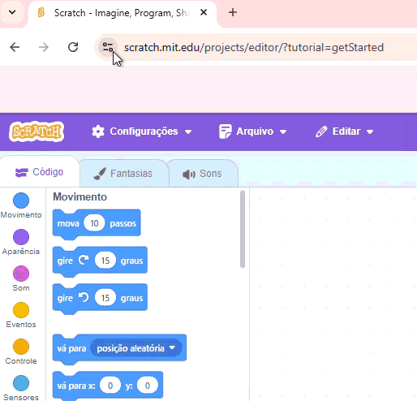
Durante o momento inicial de exploração, circule pela sala para identificar estudantes com dificuldades de navegação ou acesso. Observe também soluções criativas encontradas por algumas duplas e incentive o compartilhamento dessas descobertas com o restante da turma.
Sugira que os estudantes registrem, em caderno ou ambiente digital, suas descobertas, hipóteses e dúvidas ao longo da oficina. Esse registro facilitará a retomada do projeto em aulas posteriores e fortalecerá a reflexão sobre o processo de aprendizagem.
Reforce constantemente o papel de pesquisadores e criadores assumido pelos estudantes. O laboratório de tecnologia e design deve ser compreendido como um ambiente de experimentação, no qual o erro faz parte do processo de construção do conhecimento.
Informe que a extensão Face Sensing apresenta blocos em inglês. Sempre que possível, projete ou disponibilize um glossário com os principais comandos, como:
| Bloco em inglês | Tradução / função |
|---|---|
| Go to (parte) | Vá para (nariz, boca, olho, orelha, topo da cabeça, etc.) |
| point in direction of face tilt | aponte para a direção da inclinação do rosto |
| set size to face size | defina o tamanho como o tamanho do rosto |
| when face tilts left/right | quando o rosto inclinar para esquerda/direita |
| when a face is detected | quando um rosto é detectado |
| a face is detected? | um rosto está detectado? (condicional) |
| face tilt | inclinação do rosto (valor) |
| face size | tamanho do rosto (valor) |
Incentive a consulta entre colegas e o desenvolvimento do vocabulário técnico.
Estimule a continuidade da experimentação em casa, destacando que os projetos podem ser acessados e editados de qualquer computador com internet, desde que estejam salvos na conta do estudante.
Embarque
Antes de iniciar a programação dos acessórios, proponha um momento de exploração da ferramenta Scratch e da extensão Face Sensing. Explique que esta etapa tem como objetivo compreender como o programa reconhece e utiliza pontos do rosto capturados pela câmera.
Oriente os estudantes a acessarem o site scratch.mit.edu e clicarem em “Criar”, na parte superior da tela, para iniciar um novo projeto. Recomenda-se que o acesso seja realizado utilizando as contas vinculadas ao educador ou contas institucionais previamente organizadas pela escola, garantindo o salvamento em nuvem e a continuidade do projeto nas aulas seguintes.
Explique que é possível explorar a ferramenta sem login; no entanto, sem autenticação o projeto não poderá ser salvo na nuvem, o que pode comprometer o andamento da atividade ao longo das aulas. Caso seja necessário criar ou acessar uma conta, indique o botão “Aderir ao Scratch” ou “Inscreva-se”, localizado no canto superior direito da tela.
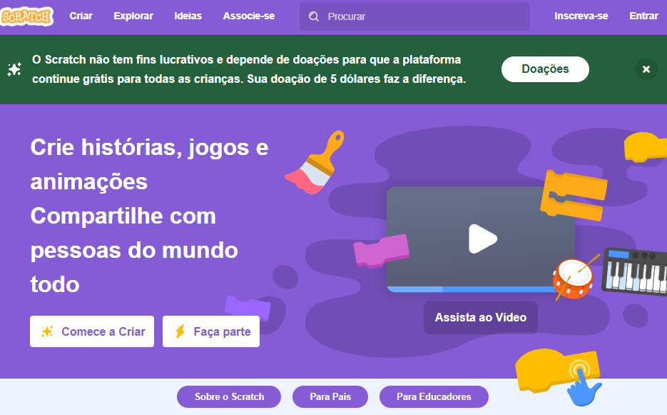
Após a abertura do novo projeto, solicite que localizem o ícone de extensões (representado por um cubo com um símbolo “+”) no canto inferior esquerdo da interface.

Em seguida, oriente a seleção da extensão Face Sensing (ícone de um rosto) e a concessão de permissão para uso da câmera. Explique que, ao ativar a extensão, um novo conjunto de blocos será adicionado à categoria Face Sensing.
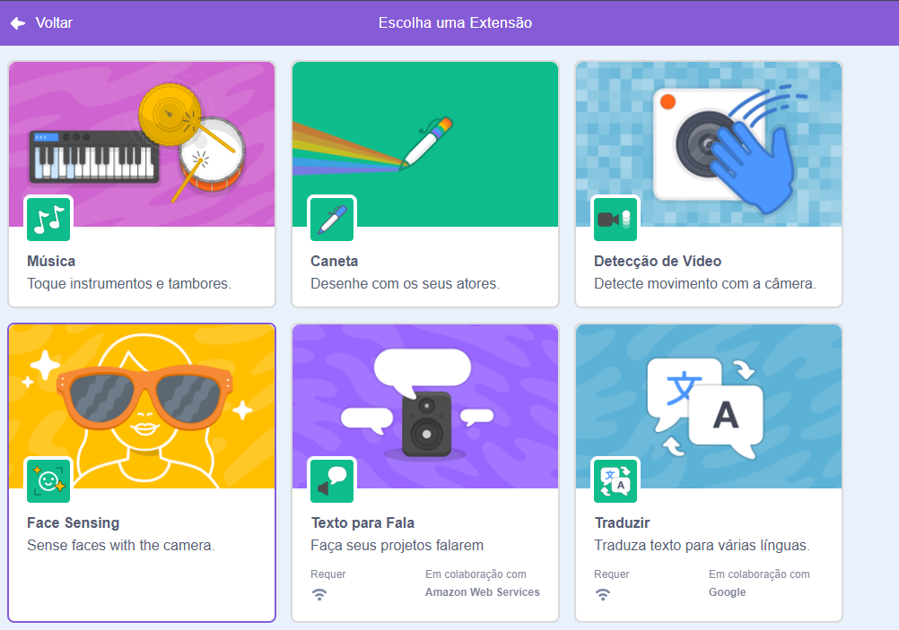
Informe que, embora o ambiente do Scratch esteja configurado em Português (Brasil), os blocos da extensão ainda aparecem em inglês, pois não foram totalmente traduzidos pela plataforma. Incentive os estudantes a utilizarem estratégias de apoio, como consulta entre colegas, uso de ferramentas de tradução, aproveitando a oportunidade de ampliação do vocabulário técnico em inglês. Valorize a colaboração entre pares como estratégia de aprendizagem.
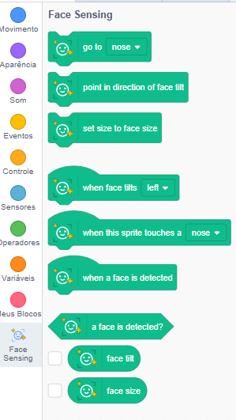
Após a familiarização com os blocos, proponha o seguinte desafio exploratório:
- Oriente a turma a descobrir, em 3 minutos, como fazer um personagem (por exemplo, o gato do Scratch) posicionar-se sobre o nariz quando o programa iniciar.
- Em seguida, desafie-os a fazer com que o personagem sempre acompanhe o movimento do nariz enquanto o estudante se movimenta diante da câmera.
- Enfatize a palavra “sempre”, direcionando a atenção para blocos de repetição ou atualização contínua.
Após o tempo estipulado, convide alguns voluntários a compartilharem as soluções encontradas. Utilize esse momento para sistematizar a ideia de que o programa pode seguir partes específicas do rosto por meio da leitura constante de coordenadas.
Caso os estudantes encontrem dificuldade no desafio, sugira que explorem os blocos da extensão Face Sensing, especialmente aqueles relacionados à detecção de rosto (“when face detected”) e ao posicionamento em partes específicas do rosto, como o bloco “go to (nose)”. Esses blocos podem auxiliar na criação da lógica necessária para que o personagem se posicione corretamente e acompanhe o movimento.
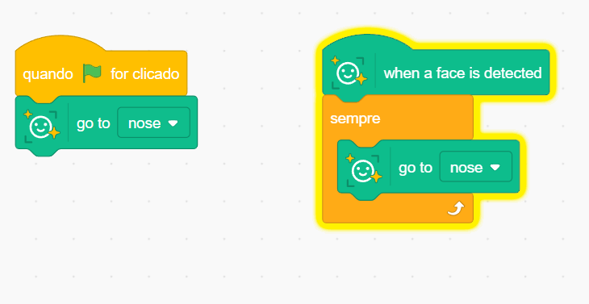
Materiais necessários
Lista de materiais, softwares e componentes necessários para a oficina.
- Computadores com webcam e acesso à internet
- Acesso ao Scratch (versão web)
- (opcional) Criar conta no Scratch para salvar os projetos
- Extensão Face Sensing ativada no Scratch
- Caderno ou folha de rascunho para registro das descobertas e realização de testes com desenhos de rostos (Diário de Bordo)
Criar
60 minProtótipo
Espelho Tecnológico
Chapéu, óculos e ícone interativo
Passo a passo
A construção do espelho tecnológico será realizada em dois encontros. Na primeira aula, os estudantes desenvolverão o chapéu virtual, explorando os conceitos fundamentais de acompanhamento de partes do rosto, inclinação e ajuste automático de tamanho conforme a aproximação da câmera. Esse momento deve priorizar a compreensão da lógica de posicionamento e atualização em tempo real.
Na segunda aula, os estudantes criarão os óculos virtuais, aplicando os mesmos princípios de rastreamento e proporção. Em seguida, serão desafiados a programar um ícone ou mecanismo interativo que permita trocar os estilos dos acessórios por meio da aproximação das mãos, de outra parte do corpo ou de um objeto diante da câmera, ampliando a experiência de interação sem uso do mouse.
Reforce ao longo do processo que programar envolve testar, identificar erros e realizar ajustes sucessivos. Ao final do segundo encontro, cada estudante terá um espelho funcional, pronto para ser compartilhado com a turma e aprimorado conforme novas ideias surgirem.
1. Preparação do projeto
Oriente os estudantes a criarem um novo projeto no Scratch. Ao iniciar, solicite que apaguem o personagem padrão (o gato), clicando com o botão direito sobre ele e selecionando “apagar”.
Em seguida, peça que criem um novo ator que representará o chapéu. O acessório pode ser desenhado clicando no ícone “Pintar” (pincel) ou escolhido na biblioteca de fantasias do Scratch.
Caso ainda não tenham ativado a extensão no momento anterior, oriente-os a adicionar a extensão “Face Sensing”, clicando no ícone de extensões (cubo com “+”) no canto inferior esquerdo e selecionando a opção correspondente.

2. Programando o acompanhamento do rosto
Explique que o bloco “sempre” será essencial nesta etapa, pois garante que o programa atualize continuamente a posição do acessório.
Oriente os estudantes a programarem o chapéu para sempre ir até o topo da cabeça de quem estiver diante da câmera.
Após posicionar corretamente, peça que testem inclinando levemente a cabeça e verificando se o chapéu acompanha o movimento.

Se for necessário alterar o tamanho do personagem, é possível usar os blocos da categoria "Aparência". Porém, é importante estar atento a possíveis conflitos entre as programações, pois o bloco “set size to face size” irá forçar um tamanho específico para o personagem continuamente. Caso se queira fazer ajustes adicionais, uma alternativa é utilizar o bloco “mude ( ) no tamanho”, que soma ou subtrai um valor ao tamanho definido pelo bloco anterior, permitindo que o acessório possa se adequar ao tamanho desejável. Uma alternativa mais simples e que evita conflitos de programação é editar diretamente o personagem na aba "Fantasias", localizada logo acima dos conjuntos de blocos, redimensionando o desenho manualmente.
3. Ajustando inclinação e tamanho
Nesta etapa, evite apresentar todos os blocos ou o caminho completo da solução. Convide os estudantes a explorarem a extensão Face Sensing e testarem hipóteses sobre como fazer o acessório responder aos movimentos do rosto.
Desafie a turma a fazer com que o chapéu incline junto com a cabeça, utilizando os blocos relacionados à inclinação do rosto.
Em seguida, oriente-os a ajustar o tamanho do chapéu para que aumente ou diminua conforme o estudante se aproxime ou se afaste da câmera.
Incentive testes constantes: aproximar, afastar e inclinar a cabeça para verificar se o comportamento está coerente.
4. Exploração e personalização
Após garantir o funcionamento básico do acessório, conduza a turma para uma etapa mais aberta, voltada à personalização e à criatividade. Evite apresentar um roteiro fechado; incentive os estudantes a modificarem o desenho na aba “Fantasias” ou criarem novos modelos de chapéus conforme seus interesses.
Para aqueles que demonstrarem maior autonomia, proponha a exploração do bloco “mude para a fantasia ( )”, permitindo alternar estilos enquanto o chapéu continua acompanhando o rosto. Essa etapa favorece a compreensão de que a lógica principal pode permanecer estável enquanto aspectos visuais são transformados.
Finalize promovendo a socialização dos resultados, convidando alguns estudantes a demonstrarem seus projetos em funcionamento para a turma e compartilharem as escolhas criativas realizadas.
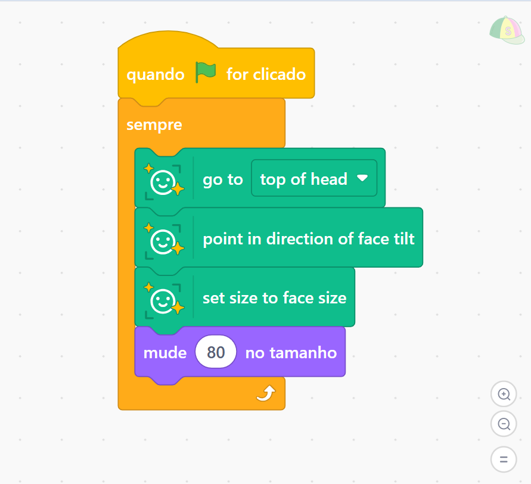
1. Criando o ator “Óculos”
Oriente os estudantes a criarem um novo ator chamado “Óculos”. Ele pode ser desenhado no editor de pintura ou escolhido na biblioteca, seguindo o mesmo processo realizado para o chapéu.
Explique que, para simplificar a programação, não é necessário criar um ator para cada olho. Uma estratégia mais eficiente é utilizar o bloco “go to (between eyes)” (vá para entre olhos), centralizando o acessório no rosto.

Oriente a aplicação do mesmo padrão lógico utilizado no chapéu, adaptando agora para a posição “entre os olhos”.
Proponha os seguintes desafios:
- Criar o ator “Óculos”.
- Programar para que sempre vá para “entre os olhos”.
- Fazer os óculos inclinarem junto com a cabeça.
- Ajustar o tamanho conforme a aproximação ou afastamento da câmera.
- Incentive testes constantes, verificando se o comportamento está coerente.
Como a programação do óculos é muito semelhante à programação do chapéu, é possível arrastar o bloco programado de um para outro, criando uma cópia.
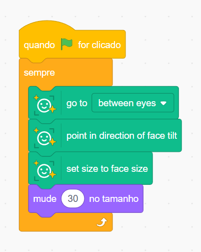
2. Criando o ícone interativo para trocar fantasias
Nesta etapa, os estudantes serão desafiados a ampliar a interação do espelho tecnológico, criando uma forma de trocar o estilo dos acessórios sem utilizar o mouse, apenas por meio de movimentos diante da câmera.
Oriente a criação de um novo ator que funcionará como ícone interativo (pode ser um círculo, uma estrela, uma seta ou qualquer outro símbolo simples). Esse elemento será posicionado em um dos cantos da tela e terá a função de reagir ao movimento detectado pela câmera.
Antes de programar a interação, oriente os estudantes a verificar se o ator “Óculos” (ou outro acessório escolhido) possui mais de uma fantasia. Caso não possua, conduza os estudantes à aba “Fantasias” para criarem novas versões, como modelos coloridos ou variações de estilo. Quanto maior a variedade, mais interessante será a experiência de troca.

Programação do ícone: O ícone deve ser posicionado em um canto da tela (os estudantes podem arrastá-lo com o mouse para o local desejado). Quando a mão do usuário ou algum objeto “tocar” o ícone, a fantasia dos óculos deve mudar para a próxima. Para evitar que a troca aconteça muitas vezes de uma só vez, oriente a adicionar um pequeno tempo de espera, na categoria “Controle”.
Com o ícone posicionado, introduza a extensão “Detecção de Vídeo”, que permitirá utilizar o movimento captado pela câmera como gatilho para ações no programa. Explique que o bloco disparador “quando detectar sensor de vídeo > ( )” funcionará como um sensor de movimento na área do ícone.
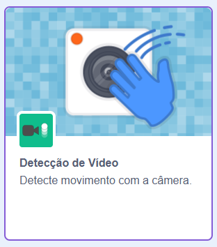
Proponha um momento como um desafio à turma: como fazer com que a fantasia dos óculos mude quando a mão do usuário ou algum objeto se aproximar do ícone na tela? Conceda alguns minutos para que testem hipóteses e explorem os blocos disponíveis, antes de apresentar a solução estruturada nos passos seguintes.
Durante a investigação, incentive-os a pensar também em como evitar que a troca de fantasia aconteça repetidamente em frações de segundo. Caso necessário, direcione a atenção para a categoria “Controle”, sugerindo a inclusão de um pequeno tempo de espera para tornar a interação mais fluida.
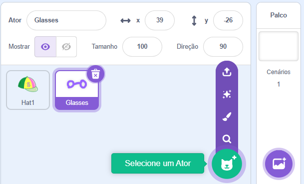
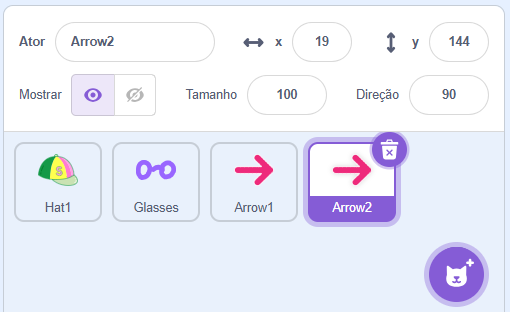
Essa extensão adiciona novos blocos. Dentre eles destaca-se o disparador de programação chamado “Quando detectar sensor de vídeo > ( )”, que funciona como um sensor de movimento. Sempre que houver qualquer movimento na área do ícone, esse bloco será acionado. Junto com ele, usaremos os blocos de rádio (presentes na categoria "Rádio") para transmitir um sinal para outro ator, no caso, o óculos.
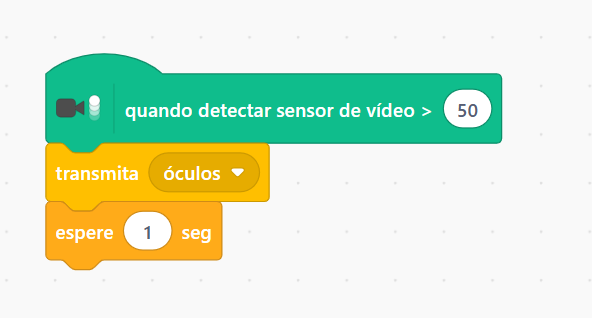
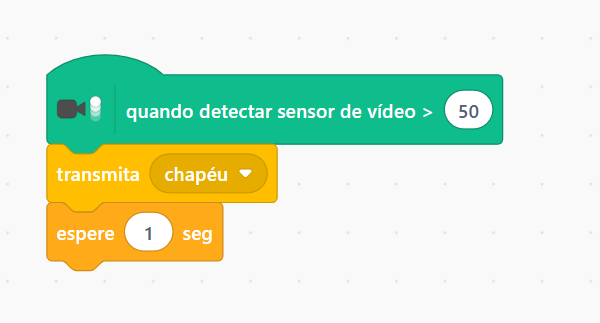
Com isso, sempre que for detectado algum movimento no personagem "seta" (ou outro ícone escolhido), um sinal será enviado para o personagem "óculos". Quando o personagem "óculos" receber este sinal, ele deverá mudar para a próxima fantasia. É importante inserir um bloco de espera para que essa troca não ocorra de forma muito rápida e repetitiva, garantindo uma experiência mais fluida para o usuário.
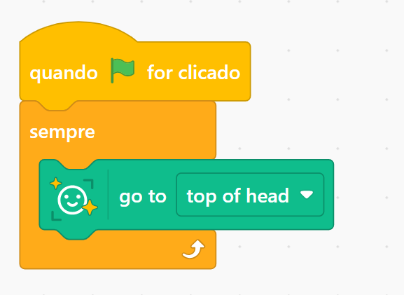
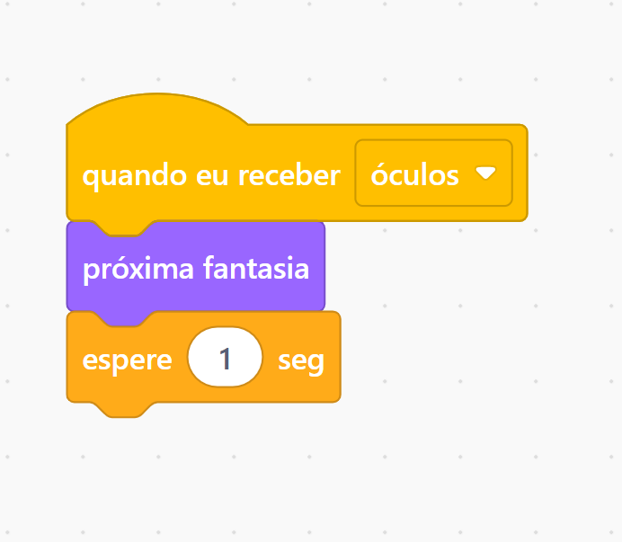
Para orientar o trabalho da turma, apresente os seguintes desafios:
- Criar um novo ator "Ícone" (pode ser um círculo, uma estrela ou uma seta)
- Posicionar o ícone em um canto da tela
- Adicionar a extensão "Detecção de Vídeo" (Video Sensing)
- Criar pelo menos duas fantasias diferentes para os óculos
- Programar o ícone para detectar movimento em sua área
- Programar o ícone para enviar um sinal de rádio sempre que o movimento for detectado
- Programar os óculos para receber o sinal de rádio e mudar para a próxima fantasia
- Adicionar um tempo de espera para evitar que a troca aconteça muitas vezes de uma só vez
- (Opcional) Adicionar um efeito sonoro ao trocar a fantasia, como o som "pop"
tips_and_updatesDicas de condução
Preparação prévia
Antes da oficina, teste as extensões “Face Sensing” e “Detecção de Vídeo” em um computador da escola, verificando se a câmera está funcionando corretamente e se todos os blocos estão disponíveis. Confirme também que o Scratch não está bloqueado pela rede institucional.
Permissão da câmera
Informe que alguns navegadores solicitam autorização para uso da câmera. Oriente os estudantes a clicarem em “Permitir” quando a notificação aparecer. Caso surjam dificuldades, verifique se a câmera não está sendo utilizada por outro programa ou se é necessário redefinir as permissões do navegador.
Circulação e apoio
Durante a programação, circule pela sala para identificar dificuldades técnicas ou conceituais. Observe soluções criativas desenvolvidas por algumas duplas e incentive o compartilhamento dessas estratégias com o restante da turma. Aproveite para confirmar se todos adicionaram corretamente as extensões necessárias.
Incentivo à colaboração
Promova a troca entre pares. Caso um estudante descubra como resolver determinado desafio (como fazer o chapéu inclinar corretamente), convide-o a demonstrar o procedimento brevemente para os colegas. Pequenos momentos de socialização fortalecem a aprendizagem coletiva.
Registro dos aprendizados
Solicite que os estudantes registrem, em caderno ou documento digital, uma breve reflexão sobre o que aprenderam, quais dificuldades enfrentaram e como as superaram. Esse registro favorece a consolidação do pensamento computacional e da metacognição.
Exploração para além da escola
Incentive a continuidade do projeto fora do ambiente escolar. Reforce que os projetos podem ser salvos e acessados de qualquer computador com internet, desde que estejam vinculados à conta do estudante.
Refletir
15 minAprendizados
Dinâmica de compartilhamento: "Galeria dos Espelhos"
Organize um momento breve para socialização dos projetos desenvolvidos. Como o tempo pode ser limitado, priorize dinâmicas ágeis e coletivas que valorizem o protagonismo dos estudantes e a troca de experiências.
Opção 1 – Roda de testes: Divida a turma em duplas. Cada estudante testa o espelho interativo do colega por aproximadamente 2 minutos, experimentando movimentos como inclinar a cabeça, aproximar e afastar o rosto da câmera e ativar o ícone de troca de fantasias. Ao final, cada participante deve comentar um aspecto positivo do projeto do colega e sugerir uma possível melhoria.
Opção 2 – Demonstração voluntária: Convide alguns estudantes a apresentarem seus projetos para a turma. Solicite que demonstrem como os acessórios acompanham os movimentos do rosto e como o sistema de troca de fantasias funciona. Utilize esse momento para destacar soluções criativas ou estratégias de programação bem estruturadas.
Opção 3 – Estúdio no Scratch: Caso os estudantes possuam conta no Scratch (com e-mail confirmado), organize um Estúdio da turma para reunir os projetos. O professor pode criar o Estúdio na área “Meus Estúdios” → “Novo Estúdio” e compartilhar o link com a turma. Após salvar o projeto, os estudantes devem clicar em “Compartilhar” e, em seguida, em “Adicionar ao Estúdio”.
Opção 4 – Compartilhamento digital externo: Oriente os estudantes a salvarem seus projetos no Scratch (“Arquivo” → “Salvar agora”) e, se desejarem, compartilharem o link em um mural virtual, como o Padlet. Reforce que o compartilhamento público exige conta ativa e e-mail confirmado.
Finalize ressaltando que a socialização dos projetos amplia o aprendizado coletivo, permite observar diferentes soluções para o mesmo desafio e fortalece a cultura de colaboração na turma.
helpPerguntas reflexivas
- Qual foi a parte mais fácil de programar? E a mais desafiadora? Por quê?
- O que aconteceria com o chapéu se o bloco “sempre” não fosse utilizado? Ele continuaria acompanhando o rosto?
- Como o computador identifica o topo da cabeça e os olhos? O que pode acontecer se o ambiente estiver escuro ou mal iluminado?
- Se fosse necessário adicionar um novo acessório (como máscara, tiara ou pintura facial), quais pontos do rosto seriam utilizados para posicioná-lo corretamente?
- Por que o chapéu muda de tamanho quando o rosto se aproxima ou se afasta da câmera?
- Qual foi a parte mais divertida de criar? O que você mostraria para um familiar em casa?
- A programação funcionaria da mesma forma com o desenho de um rosto? Por quê?
Para ir além!
Amplie a experiência propondo novos desafios de criação. Incentive os estudantes a experimentarem novas situações, respondendo questões como: seria possível criar uma moldura para o espelho? Como organizar um acessório para frente ou para trás de outros? É possível criar efeitos durante a transição entre cada fantasia?
Como desafio adicional, proponha a utilização do bloco “escolha um número aleatório” para criar um sistema de sorteio de fantasias, permitindo que o acessório mude para um modelo aleatório a cada ativação.
Desafie também os estudantes a pensarem no design da interface quando o espelho possui múltiplos acessórios (chapéu, óculos, máscara). Onde posicionar os ícones de controle na tela para não atrapalhar a visão do rosto? Como indicar visualmente qual acessório está selecionado? Como organizar os elementos para que a experiência seja clara e intuitiva? Incentive ajustes de posição, tamanho e até a criação de um "painel de controle" organizado.
Oriente os estudantes que possuam conta ativa no Scratch a compartilharem seus projetos na plataforma, divulgando-os para familiares, amigos ou outras turmas. Esse momento amplia o alcance do trabalho e fortalece o protagonismo digital.
Proponha ainda uma investigação prática sobre as condições de funcionamento do espelho tecnológico. Como o sistema se comporta em diferentes níveis de iluminação? O que acontece quando o usuário usa óculos reais ou cobre parte do rosto? E se o rosto estiver mais distante da câmera? Incentive o registro das observações.
Por fim, estimule uma investigação sobre os limites da detecção facial: a programação funcionaria com um desenho de rosto? E com um boneco, máscara, fotografia impressa ou até mesmo um animal de pelúcia? Oriente os estudantes a testarem diferentes possibilidades e registrarem os resultados, analisando por que alguns “rostos” são reconhecidos e outros não. Essa reflexão contribui para a compreensão crítica das possibilidades e limitações das tecnologias de reconhecimento facial.
tips_and_updatesDicas de condução
1. Celebração das entregas
Valorize o esforço de cada estudante ao final da oficina. Mesmo que alguns projetos não estejam totalmente finalizados, reconheça o progresso alcançado ao longo do processo. Pequenos gestos de reconhecimento, como aplausos coletivos ou menções positivas, contribuem significativamente para a motivação e a autoconfiança.
2. Registro dos aprendizados
Solicite que os estudantes registrem, em seus cadernos ou em um documento digital, uma breve reflexão orientada por perguntas como: “O que aprendi hoje?” e “O que gostaria de melhorar no meu espelho interativo?”. Esse momento favorece a consolidação do conhecimento e estimula a autorregulação da aprendizagem.
3. Feedback positivo e construtivo
Durante os testes e apresentações, incentive práticas de feedback que comecem com um aspecto positivo e avancem para uma sugestão de melhoria. Por exemplo: “Gostei do seu chapéu; você poderia criar uma segunda fantasia para ampliar as opções?”. Essa abordagem fortalece o respeito mútuo e a cultura de aprimoramento contínuo.
4. Estímulo à continuidade
Reforce que a programação é um campo em constante expansão e que os estudantes podem continuar explorando o Scratch em outros momentos, seja na escola ou em casa. Incentive o desenvolvimento de novos projetos ou o aperfeiçoamento do espelho interativo criado.
5. Organização de um evento de socialização
Sempre que possível, promova uma “Mostra de Espelhos Tecnológicos”, permitindo que os estudantes apresentem seus projetos para outras turmas, familiares ou em um evento interno da escola. Essa ação amplia o reconhecimento do trabalho realizado e fortalece o protagonismo estudantil.